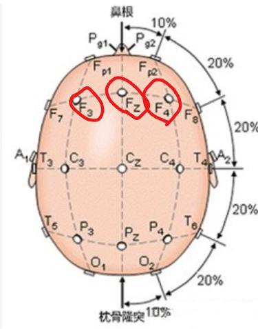

{{t.tag}}
STARNING
{{t.status}}
{{t.title}}
{{t.question}}
{{m.k}}{{m.v}}
- {{p.state}}{{p.k}}{{p.d}}
01
{{t.h1}}
{{m.k}}
{{m.p}}
{{t.purpose}}
03
{{t.h3}}
{{t.litLead}}
{{a.k}}{{a.d}}

{{t.faaH}}
{{f.k}}{{f.d}}
{{t.tsH}}
04
{{t.h4}}
{{t.designLead}}
| {{t.colVar}} | {{t.colName}} | {{t.colLevel}} |
|---|---|---|
| {{v.k}} | {{v.n}} | {{v.l}} |
{{p.tag}}
{{p.k}}
{{p.goal}}
- {{r.d}}
05
{{t.h5}}
{{t.subjects}}
- {{f.n}} {{f.k}}{{f.d}}
{{t.ctrlH}}
{{t.moderator}}
{{t.gearH}}
{{g.k}}{{g.d}}
06
{{t.h6}}
{{d.k}}{{d.d}}
07 · {{t.h7}}
{{t.future}}